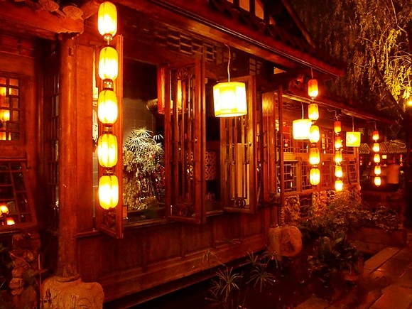
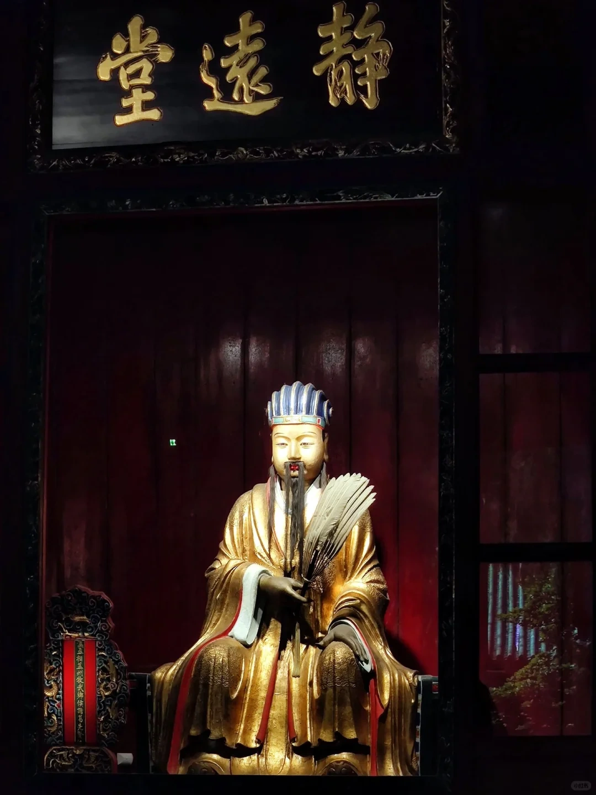

起源
“锦里”原为是秦汉三国时期成都以织锦、售锦为主的一条古街，历代文献词赋多有记载。织锦业的高度发达使得成都有了“锦城”的别称。锦里，人称“西蜀第一街”，是西蜀历史上最古老、最具有商业气息的街道之一，以织锦、售锦为主，历代文献词赋多有记载。
Read More
诸葛井
诸葛庐大门上悬挂着“一泓清水鉴风云，三顾隆情真蜀汉”，院内还有一口井，此井名诸葛井。相传诸葛井是诸葛亮为民谋利所挖掘的水井，而诸葛庐正是诸葛亮未出山时的住所。成都人一直对诸葛亮有种特殊的感情，锦里旁边纪念诸葛亮的武侯祠。
Read More

阿斗井
相传刘备驾崩以后，其子刘禅每年都要去惠陵祭拜先父，每次都会在一口井边驻足休息，后人因此称之为阿斗井。刘禅的昏庸无能在历史上出了名，后来，人们常用“扶不起的阿斗”比喻那种懦弱无能、没法使他振作的人。
Read More